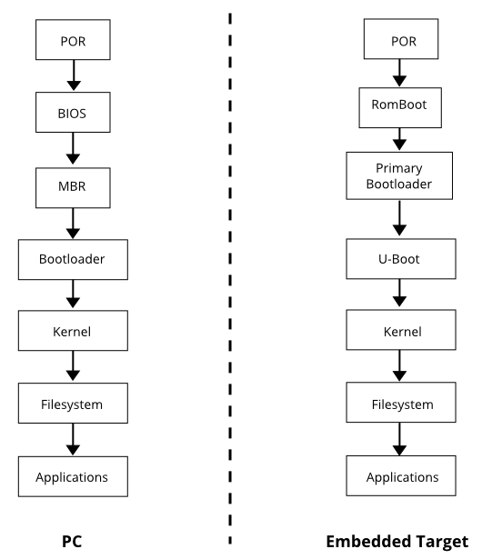

Typical Boot flow
Boot Methods
- Bootloader from various locations (flash devices, sdcard, etc.)
- Kernel from various locations (flash, network, sdcard, usb, etc.)
- Filesystem from various locations (flash, network, sdcard, usb, etc.)
Parched of Resources
- Applications need memory management or Scheduling.
- Kernel requires timer & memory to operate.
- Bootloader loads Kernel with required resources.
I'm not thirsty
#include <stdio.h> void main() { printf("helloworld"); }
- Even a simple c program, requires a lot of setup to be done in prior.
- Setup stack ➽ initialize global data ➽ initialize read-only data.
First Things First
- On POR, processor goes to RomBoot code.
- Looks for various options to get primary bootloader.
- Now primary bootloader loads U-Boot.
Treasure Hunt

Here, map is the Treasure mate!!

Start
- Clears out icache, dcache and mmu tables if any.
arch/<arch>/cpu/soc/start.S ➽ reset.
Runtime setup
- Setup the c runtime dependencies.
- Run lowlevel_init if any.
- Initialize the resources one by one.
- Calls board_init_f_alloc_reserve.
arch/arm/lib/crt0.S
Common initialization
- Sets up stack.
- Sets up global data.
- Sets up local data.
- Shows boot progress.
common/init/board_init.c
Initializations in Sequence
- A sequence of functions will be called one by one.
- Boot stage at this level will be marked.
common/board_f.c
SoC initialization
- Initialize hardware timer.
- Initialize flash device with environment setup.
- Check for integrity of environment.
arch/<arch>/cpu/<soc-family>/<soc>.c
Board initialization
- Common board related informations.
- CPU and CPU revision information.
- Information about the U-Boot itself.
common/board_f.c
arch/<arch>/cpu/<soc>/cpuinfo.c
board/<vendor>/<board>/<board>.c
Driver initialization
- Initialize serial device.
- Initialize console output.
- Initialize network device.
drivers/<device>/<device>.c
common/console.c
RAM initialization
- As per SoC memory map, DRAM will be initialized.
- U-Boot stores its global and local data in DRAM.
- Preserves the data store in memory from modifications.
- Configures the size of each area in stack.
- Displays the information about DRAM.
arch/<arch>/cpu/<soc>/<soc>.c common/board_f.c
AutoBoot
- Attempts autoboot using bootcmd configured in environment.
- Gets the Image to memory.
- Finds the OS type.
- Consolidates the environment and global data to be passed. Places them in memory.
- Boots the OS; Jumps to OS. Control is no more available in U-Boot.
common/bootm.c
Detailed Calltrace
- reset - arch/arm/cpu/pxa/start.S
- cpu_init_crit - arch/arm/cpu/pxa/start.S
- board_init_f_alloc_reserve - common/init/board_init.c
- board_init_f_init_reserve - common/init/board_init.c
- show_boot_progress - common/init/board_init.c
- mark_bootstage - common/board_f.c
- initcall_run_list - lib/initcall.c
- timer_init - arch/arm/cpu/pxa/timer.c
- env_init - common/env_flash.c
- crc32_no_comp - lib/crc32.c
Detailed Calltrace (contd.)
- serial_init - drivers/serial/serial.c
- console_init_f - common/console.c
- dram_init - board/gumstix/verdex/verdex.c
- pxa2xx_dram_init - arch/arm/cpu/pxa/pxa2xx.c
- setup_machine - common/board_f.c
- setup_dram_config - common/board_f.c
- dram_init_banksize - common/board_f.c
- show_dram_config - common/board_f.c
- reloc_fdt - common/board_f.c
- setup_reloc - common/board_f.c
Detailed Calltrace (contd.)
- load_env - common/bootm.c
- autoboot - common/bootm.c
- do_bootm - common/bootm.c
- do_bootm_states - common/bootm.c
- bootm_find_os - common/bootm.c
- bootm_load_os - common/bootm.c
- boot_relocate_fdt - common/bootm.c
- boot_selected_os - common/bootm.c
Questions
References
Follow me
babuenir | |
@babuenir | |
babuenir |